Geospatial Archaeology and GIS
Spatial data, spatial thinking, and the foundations of archaeological GIS
W. Christopher Carleton | 2026-11-20
Why does location matter?
Why are archaeological things where they are?

Aerial photograph: Steve Jurvetson, CC BY 2.0.
From maps to explanations
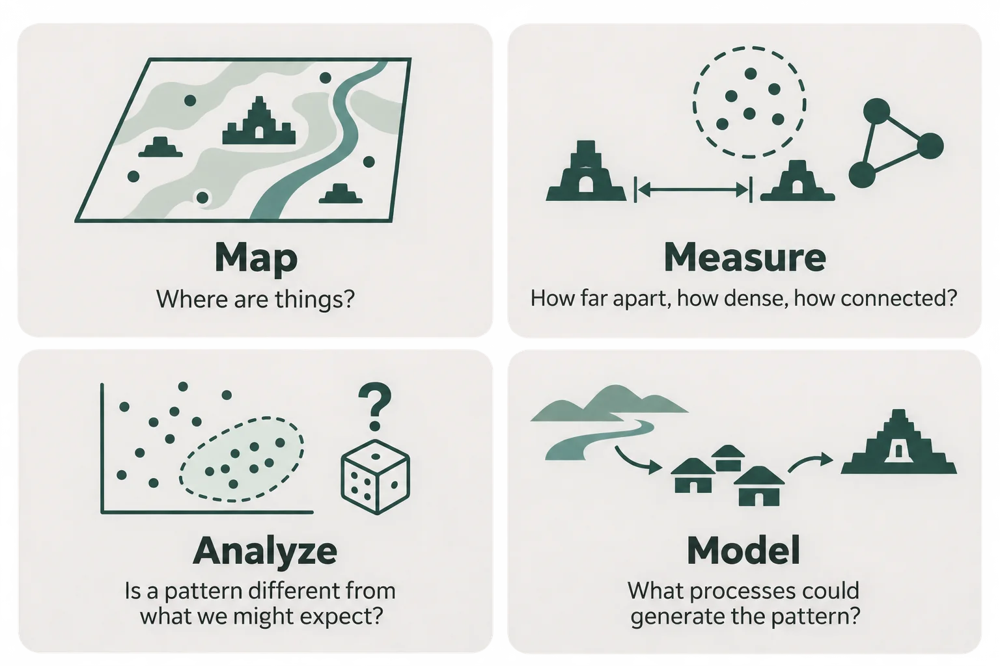
GIS is a framework for representing, manipulating, and analysing geographically referenced information.
Spatial Thinking in Early London
John Snow: cholera in Soho, 1854
- Mapped cholera deaths alongside public water pumps.
- Recognised a concentration of deaths around the Broad Street pump.
- Investigated where people obtained their water, including cases that did not fit a simple proximity pattern.
- Combined spatial patterns and household evidence to argue for waterborne transmission.

Image: John Snow, via Wikimedia Commons · Public domain.

Locations + relationships + contextual evidence → an explanation to investigate.
Brief History of GIS in Archaeology
Changing ways of thinking about space
| Rough period | Main emphasis |
|---|---|
| Before the 1940s | Map sites and artefact distributions; trace cultural regions and connections. |
| 1940s–1950s | Regional settlement patterns: Gordon Willey’s Virú Valley survey, Peru (1946; published 1953), relates settlements to environment and social organisation. |
| 1960s–1970s | Quantitative spatial analysis: measure clustering, catchments, and relationships between sites. |
| 1980s–present | Digital GIS: integrate layers and model landscapes, movement, and visibility; debate how space was experienced and understood. |
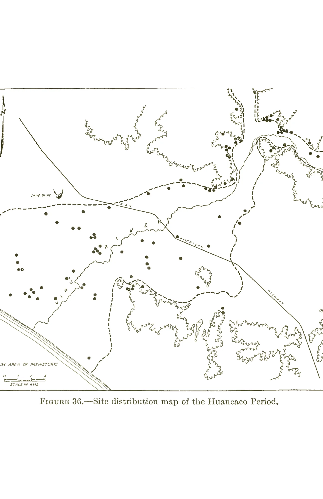
Gordon Willey: the region as a unit of study
The Virú Valley: sites in a landscape
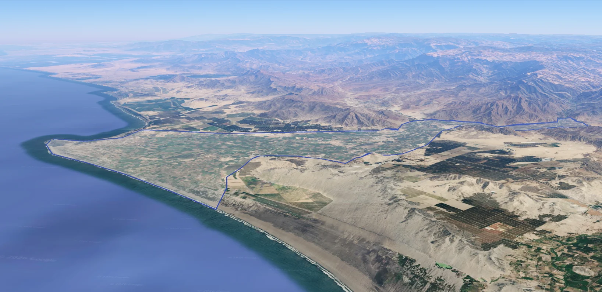
How might terrain and access to water shape the distribution of settlements?
SPATIAL DATA
Two fundamental representations
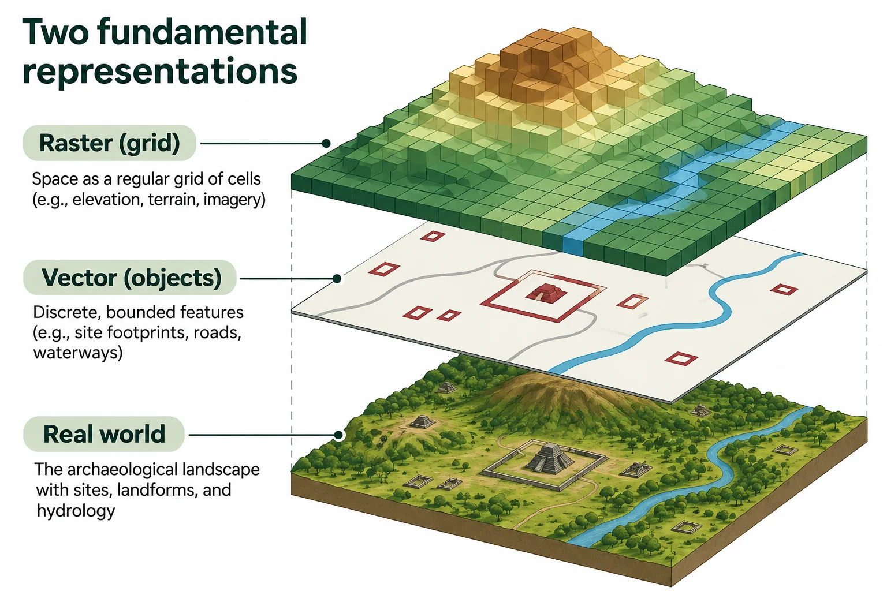
Raster: a grid of values
- Space is divided into rows and columns of cells.
- Each cell stores a value per band: elevation, reflectance, or a land-cover code.
- Cell size determines the spatial resolution.
- NoData marks missing or undefined values.
Archaeological uses: terrain models, satellite imagery, and geophysical survey grids.
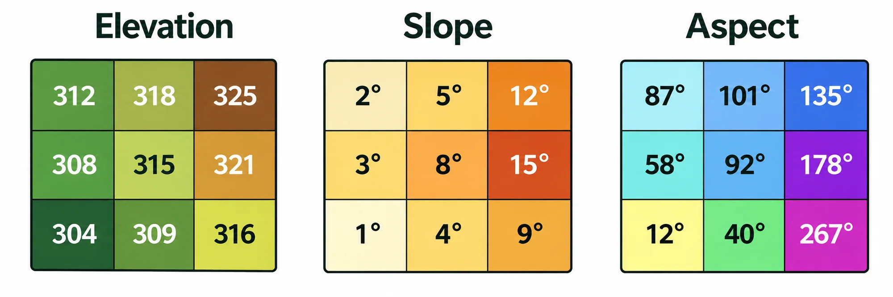
A cell value represents an area at a chosen resolution. Zooming in does not add detail.
Raster coordinates and resolution
- Location: a CRS and the grid’s origin, orientation, and cell size locate each row and column on Earth.
- Resolution: cell width and height in coordinate units; a 10 × 10 m cell covers 100 m².
- Extent: the geographic area covered by the whole grid.
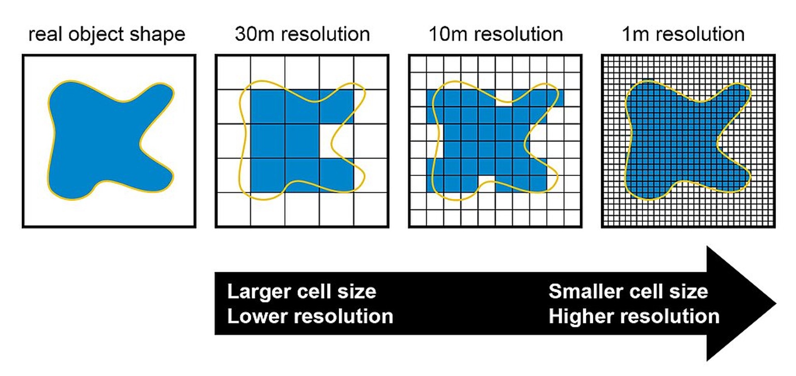

Vector: features with geometry
- Point: a findspot or settlement location.
- Line: a road, wall, or waterway.
- Polygon: a building footprint or survey area.
Coordinates define the geometry; attributes describe the feature.
Geometry is a modelling choice: a point may represent an entire settlement; a crisp polygon may represent an uncertain boundary.
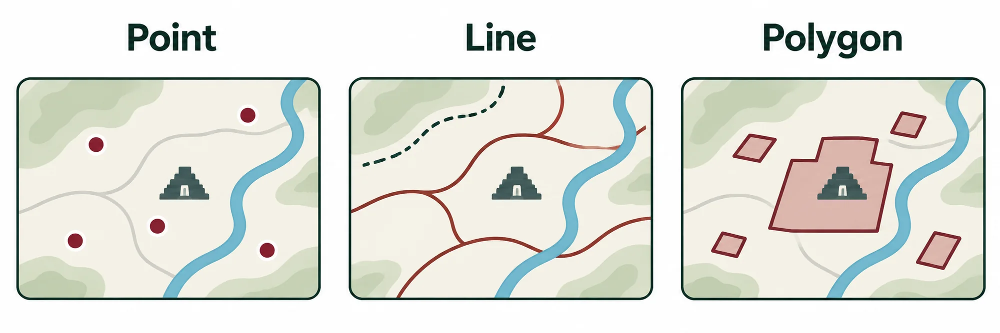
Choose a representation that fits the question, scale, and available evidence.
Vector coordinates: from locations to shapes
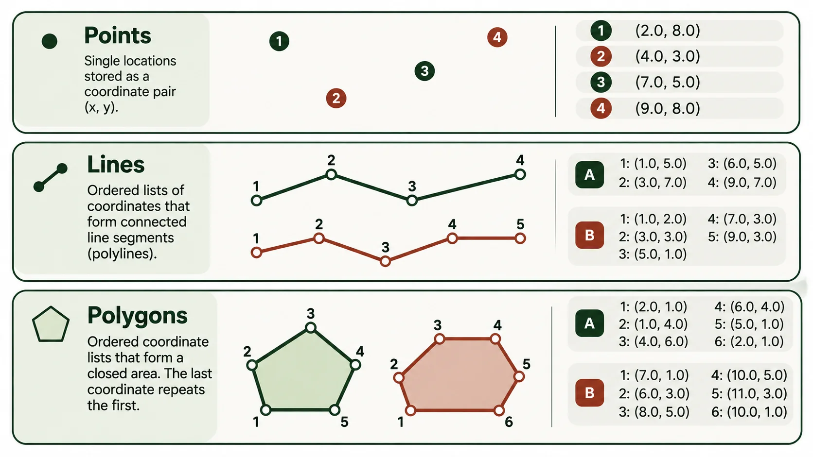
Coordinates define the shape; a coordinate reference system places it on Earth.
Attributes: the other half of GIS
| site_id | period | ceramics | confidence |
|---|---|---|---|
| A01 | Early medieval | 143 | High |
| A02 | Uncertain | 28 | Low |
| A03 | Late medieval | 79 | Medium |
- Geometry locates a feature.
- Attributes describe it.
- Each row usually corresponds to a feature; columns store variables.
Conversions
Vector → raster: rasterise
- Assign feature attributes to grid cells.
- Choose cell size, grid alignment, and an assignment rule.
- Example: turn land-use polygons into a categorical grid.
Raster → vector: polygonise
- Trace regions of connected cells with the same value.
- Example: turn a classified land-cover raster into polygons.
- Boundaries inherit the cell edges.
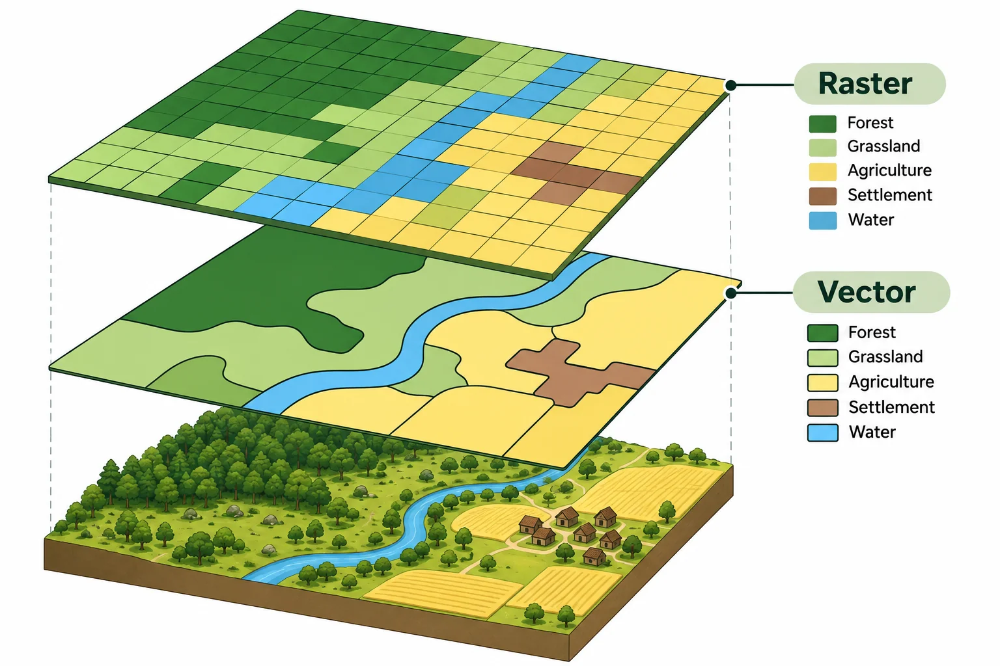
Conversion changes the representation; it does not recover lost spatial detail.
Conversions: what happens at the edges?
- A vector boundary can cross a cell; a categorical raster assigns a class to the whole cell.
- Cell size controls how closely the grid can follow a boundary.
- Grid alignment and assignment rules affect which cells receive each class.
- Narrow features may disappear or widen; measured areas and boundaries can change.
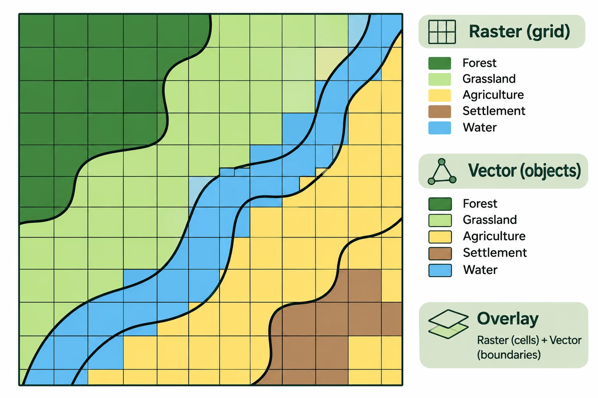
A smoother-looking output does not necessarily contain more spatial information.
Layers and files
- Layers combine geographic information in a map.
- A layer may contain vector features or a raster.
- Common files: GeoPackage, GeoJSON, GeoTIFF, coordinate-bearing CSV.
- Older Shapefiles are still encountered, but have limitations.
- A QGIS project stores a map configuration; it is not necessarily a self-contained copy of the data.

COORDINATES AND PROJECTIONS
Coordinates need a reference system
- Geographic coordinates: longitude and latitude (angular units).
- Projected coordinates: positions on a flat map (often metres).
- A coordinate reference system (CRS) specifies how coordinates relate to the Earth.
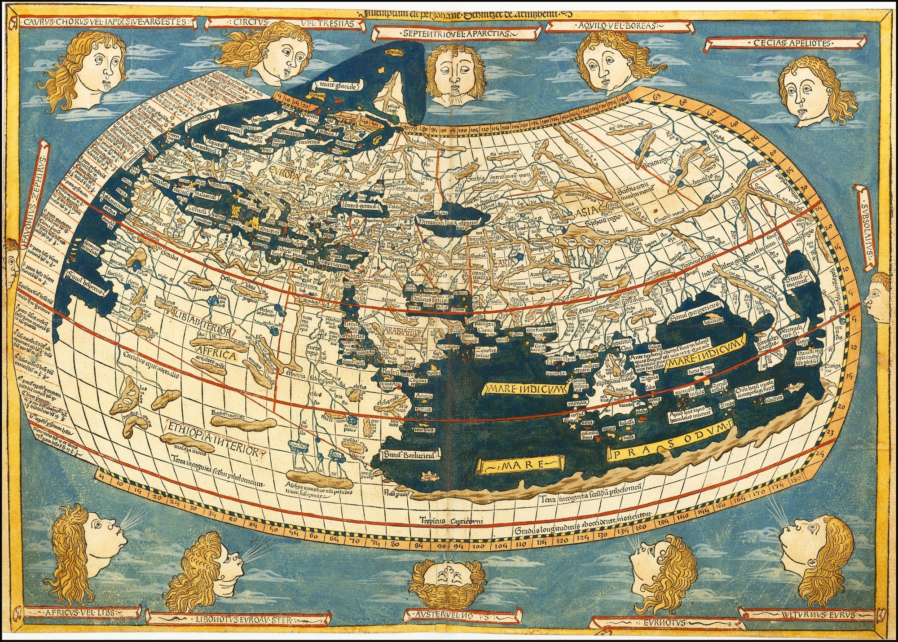
A pair of numbers is not a usable location unless we know what coordinate system it belongs to.
Why project the Earth?
- Earth is curved; maps and many GIS calculations use planes.
- Projections necessarily introduce distortion.
- Distortion can affect area, shape, distance, or direction.
- Choose a CRS appropriate to the region and measurement.
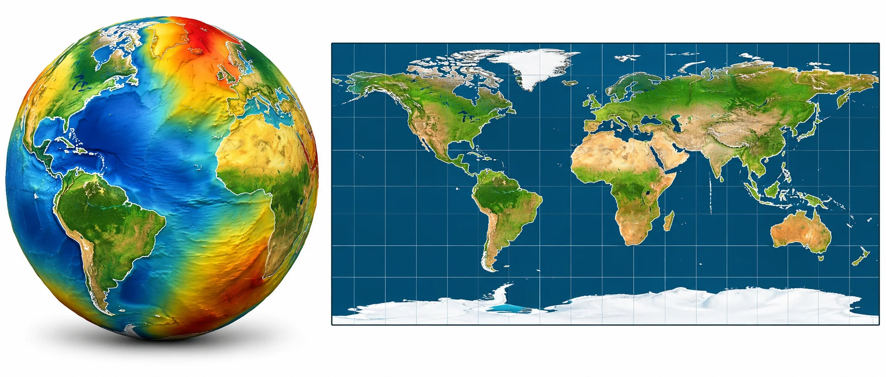
Mercator: useful properties, visible distortion
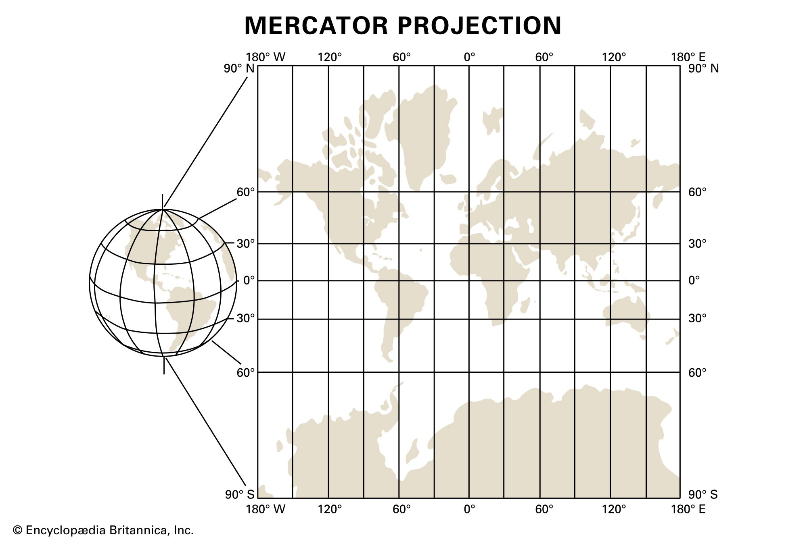

Preserves local angles; greatly enlarges areas towards the poles.
Different projections, different compromises
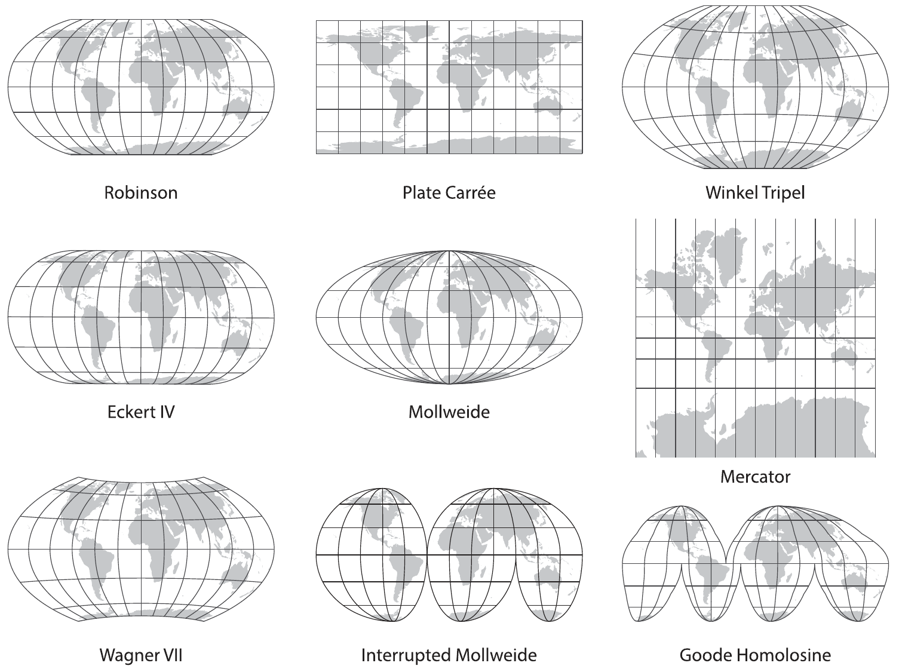
Choose for the region and task: area, local shape, distance, or overall presentation.
Watch the projection change
Map Projections Morph (2023). Credit: NASA’s Scientific Visualization Studio. Visualization: Greg Shirah.
Two operations students must not confuse
Assign / define CRS
Tell GIS what the existing coordinate numbers mean.
Reproject / transform
Calculate new coordinate numbers in a different CRS.
Incorrectly assigning a CRS can put data in the wrong place.
SPATIAL RELATIONSHIPS
Tobler’s first law of geography
“Everything is related to everything else, but near things are more related than distant things.”
— Waldo Tobler (1970)
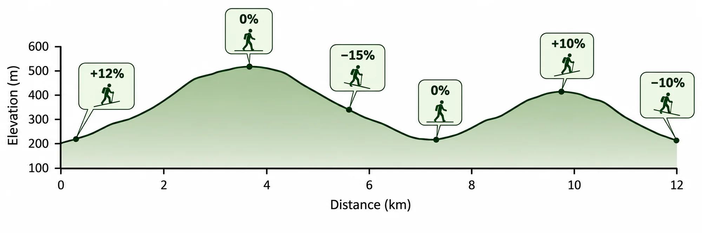
What counts as ‘near’?
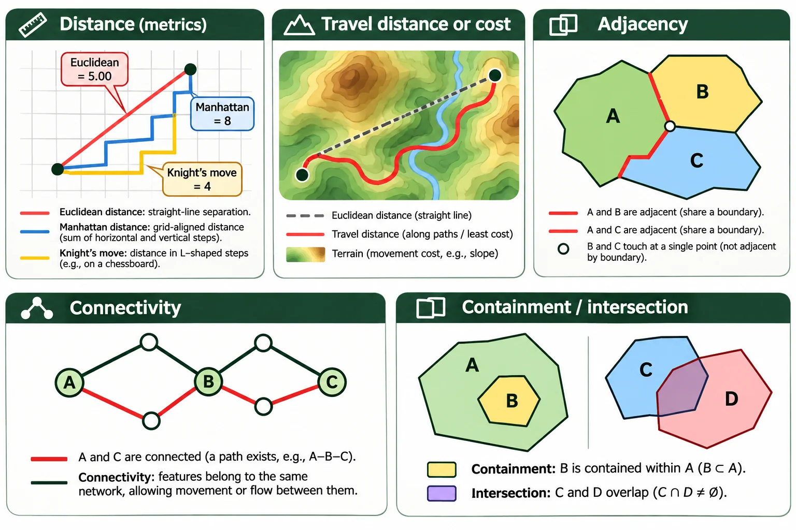
Spatial dependence and clustering
- Spatial observations are often not independent.
- Nearby sites may share environmental and historical influences.
- Apparent clusters can also arise from survey coverage.
- A mapped cluster is not automatically evidence of social interaction.
Case study: are neighbouring houses contemporary?
Jōmon pithouses, Chiba New Town, Japan
- Mapped houses appear in clusters.
- Excavated areas define where evidence was recovered.
- Dating uncertainty complicates comparisons through time.
Question: does proximity imply that households lived together?
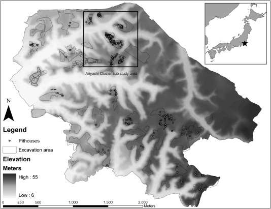
Simple clustering statistics: Moran’s I
Question: do neighbouring survey squares have similar artefact counts?
Four equal-area squares in a row
| Square | A | B | C | D |
|---|---|---|---|---|
| Count | 2 | 2 | 8 | 8 |
| Count − mean | −3 | −3 | +3 | +3 |
Mean = 5. Neighbours: A–B, B–C, C–D.
Equal survey effort; each neighbour link has weight 1.
Multiply neighbouring deviations
- A–B:
- B–C:
- C–D:
Count both directions: .
Sum of squared deviations: .
Positive I: similar values tend to be neighbours. Statistical significance needs a comparison with random rearrangements.
Invented example. Method: Global Moran’s I, Esri documentation.
FUNDAMENTAL GIS OPERATIONS
Buffer and distance
Buffer: construct a zone within a specified distance of features.
Distance: measure separation from features or locations.
Example: Which archaeological sites lie within 500 m of mapped rivers?
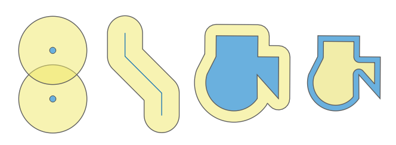

Clip, intersect, and spatial join
- Clip: retain the portion of data inside a study boundary.
- Intersect / overlay: find the geographic overlap of layers.
- Spatial join: attach attributes based on spatial relationships.
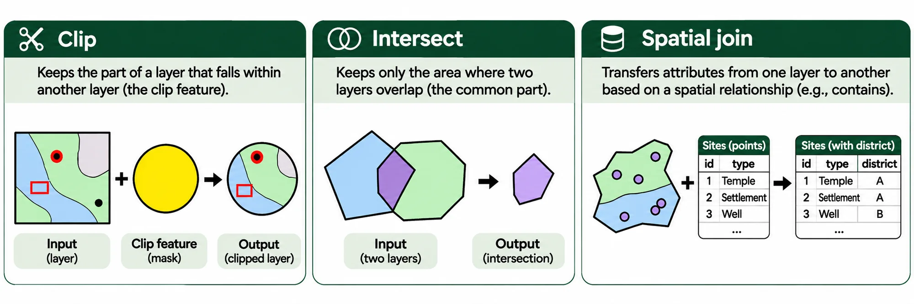
Working with raster values
- Sample: retrieve elevation at each site.
- Derive: calculate slope from a DEM.
- Summarize: mean elevation within a survey polygon (zonal statistics).
- Combine: raster calculations or classifications.
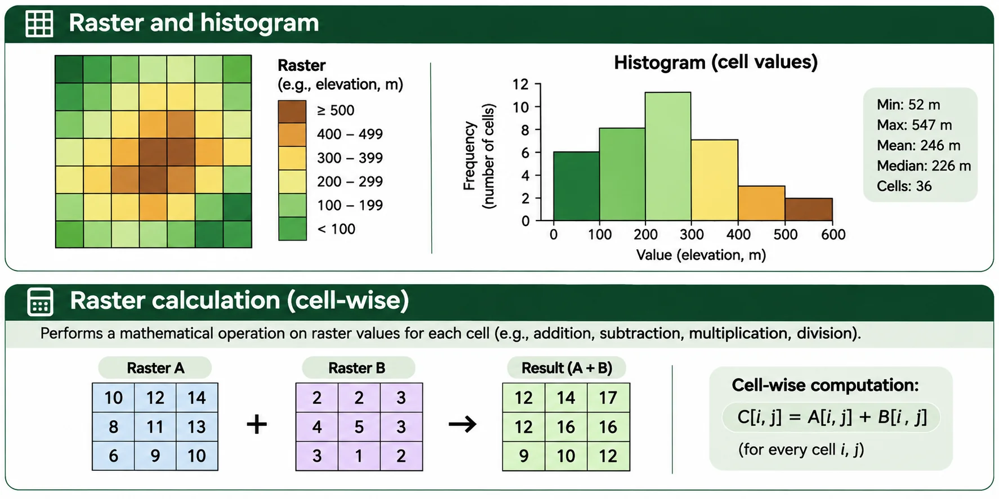
A simple analysis is already possible
Question: Are recorded settlements associated with a particular soil type?
- Load site locations and soil polygons.
- Confirm their CRSs.
- Spatially join soil categories to sites.
- Count sites by category.
- Compare with the area and survey effort in each category.
SCALE, TIME, AND UNCERTAINTY
Resolution, precision, accuracy
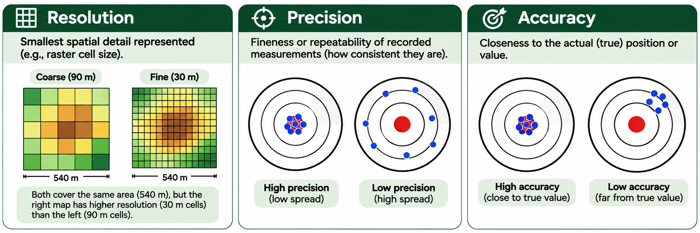
Eight decimal places do not guarantee an accurately located archaeological site.
Scale changes the pattern
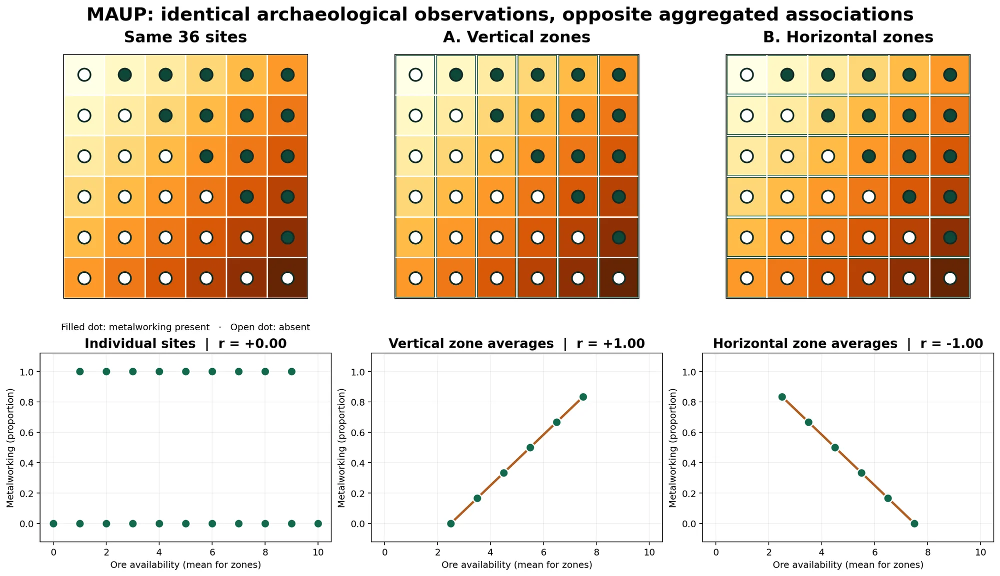
MAUP — Modifiable Areal Unit Problem: results depend on how observations are grouped into areas.
Archaeological maps also have time
- Features on the same map may not have coexisted.
- Chronological assignments can be broad or uncertain.
- Landscape features (rivers, shorelines, roads) change through time.
- A spatial pattern without temporal control can be misleading.
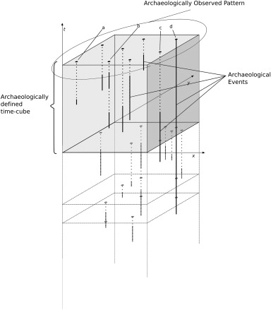
The archaeological observation process
Past activity → preservation → discovery → recording → GIS layer
- Preservation is spatially variable.
- Surveys do not cover all areas equally.
- Detection and classification are imperfect.
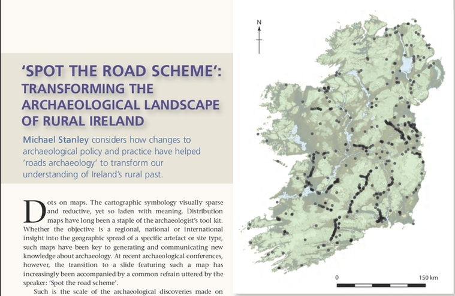
A distribution of recorded sites is not necessarily a distribution of past activity.
AN ARCHAEOLOGICAL WORKFLOW
Example: settlements and waterways
Research question: Were settlements preferentially located near waterways?
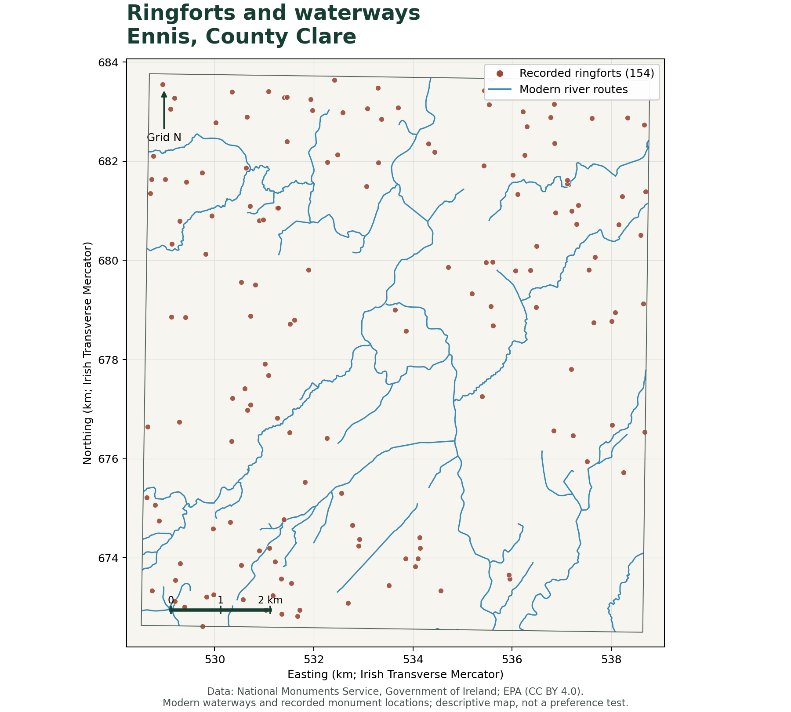
From question to GIS operations
- Obtain settlement locations, waterways, and study-area boundary.
- Check coordinates, CRSs, and attributes.
- Calculate distance to nearest waterway.
- Compare site distances with appropriate background locations.
- Examine sensitivity to chronology, survey coverage, and historic hydrology.
Results: distances to the nearest waterway
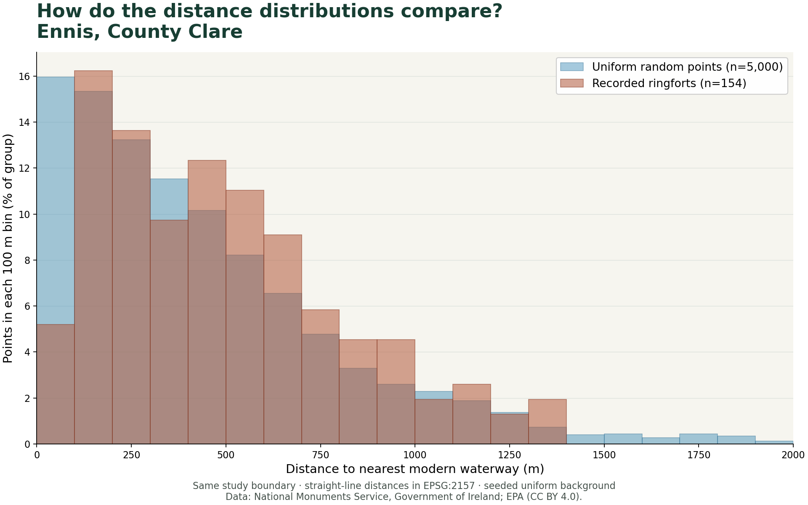
Where do the distributions overlap, and where do they differ?
Interpretation is not an automatic GIS output
Finding: Many mapped sites are near rivers.
Does this mean rivers caused settlement locations?
- Are rivers common across the study region?
- Were other locations surveyed?
- Did these rivers exist during occupation?
- Could elevation, soils, or transport networks explain the pattern?
GIS can calculate a relationship; archaeology must justify its interpretation.
The basic GIS workflow
- 01 · QuestionDefine the problem
- 02 · DataGather evidence
- 03 · Check & alignCRS · units · quality
- 04 · AnalyseMeasure patterns
- 05 · ValidateCheck the results Revise inputs
- 06 · InterpretExplain in context
- 07 · CommunicateMap & tell the story
The workflow is iterative: checking a result can send us back to the data.
Max Planck Institute of Geoanthropology